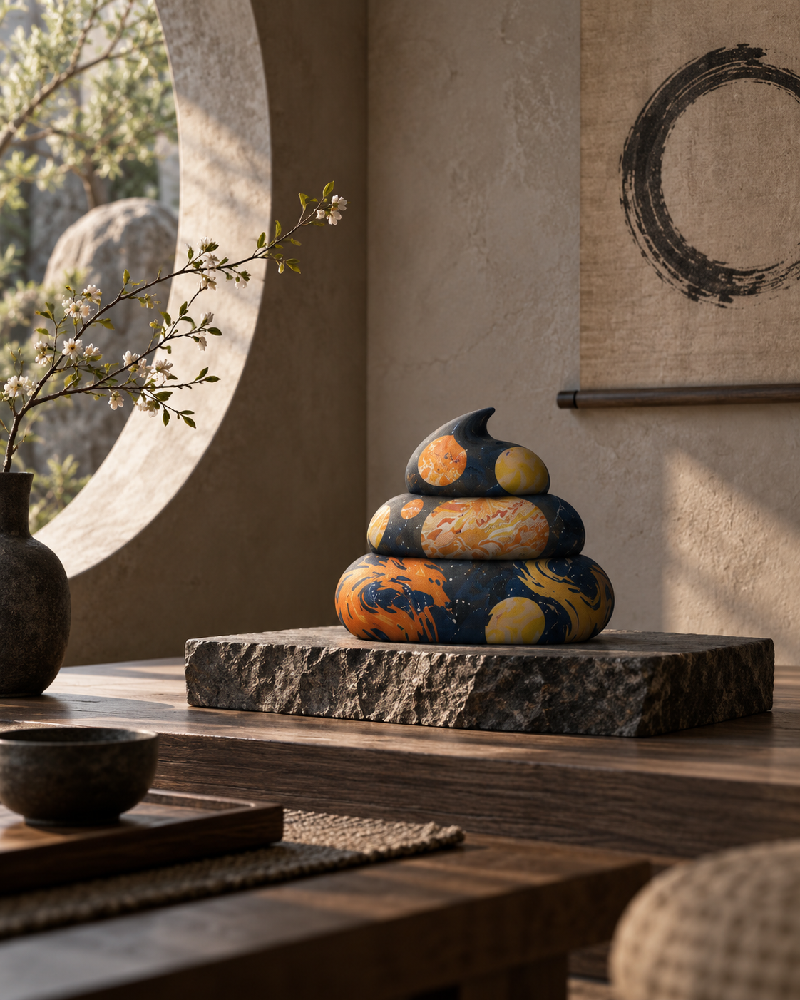
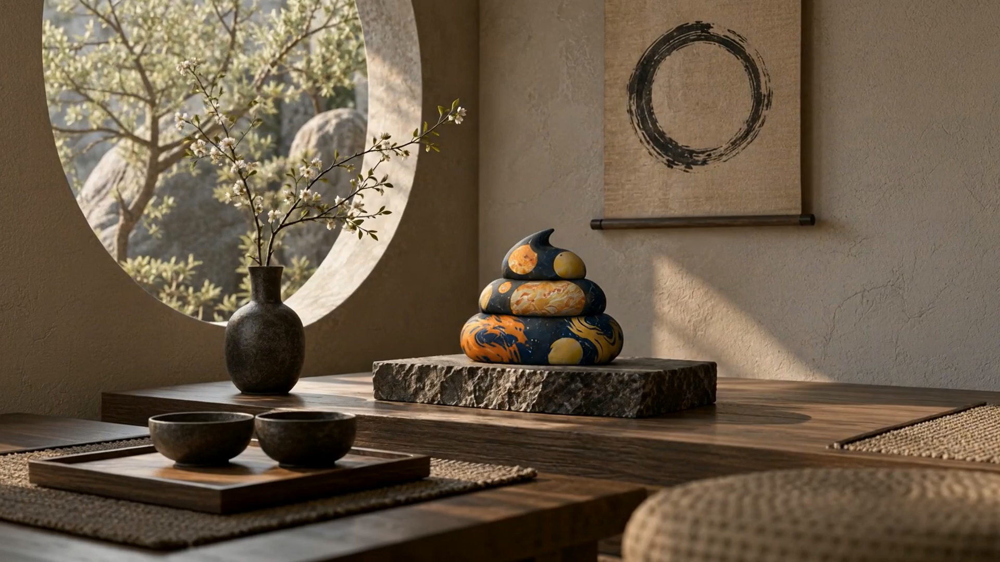
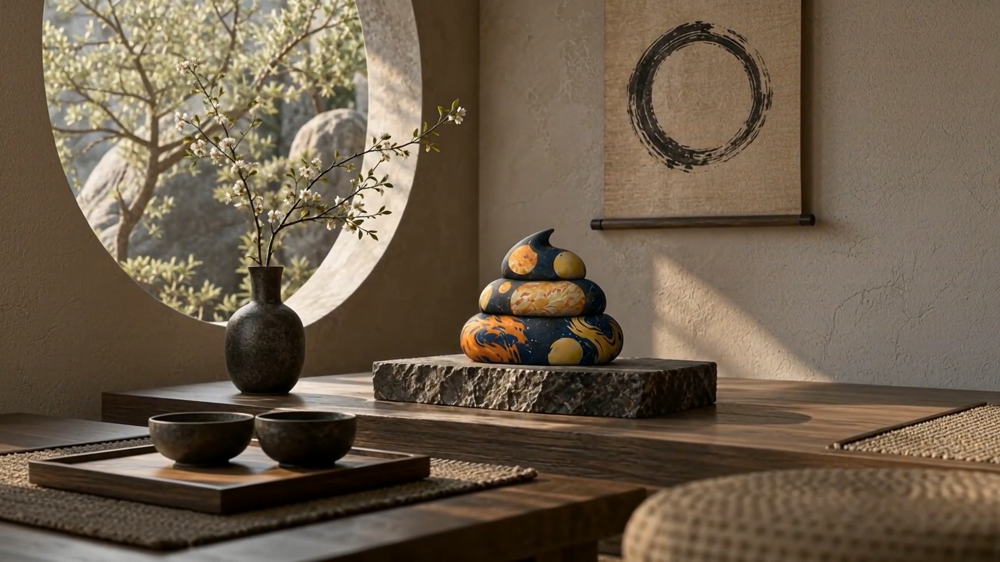
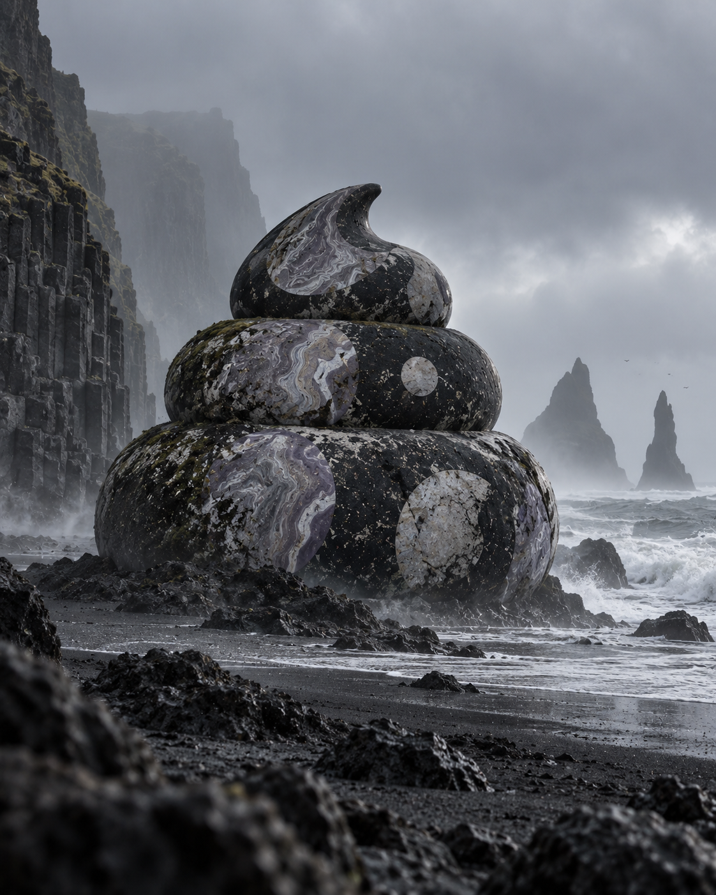
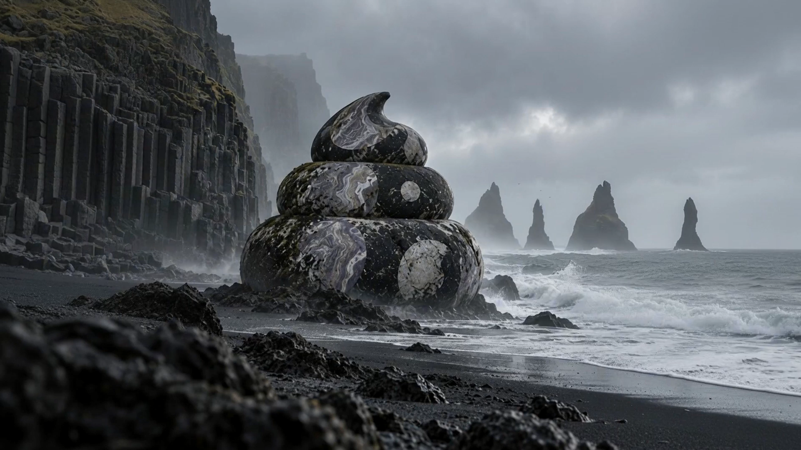
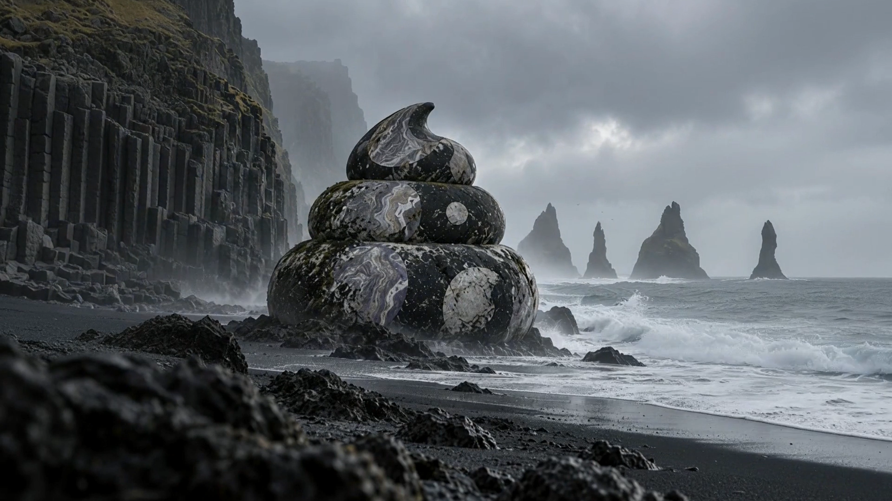

共有資料の一覧 ／ 確認ページ #919 ZEN 2本：茶室・黒砂海岸を16:9ループ動画に
#919 ZEN 2本：茶室・黒砂海岸を16:9ループ動画に
2026-09-17 実装・main合流・本番(GitHub Pages)反映まで実測確認
縦長のZEN静止画2枚（茶室・黒砂海岸）を横に伸ばして16:9にし、そこから1920×1080・5秒のループ動画を2本作りました。カメラは固定、茶室は外の緑だけがそよぎ、海岸は波と雲だけが動きます。実測：解像度1920x1080(両方一致)／長さ5.17秒(124フレーム・24fps)／茶室:最初と最後のフレーム差RMSE=2.88・往復度スコア=17.13／海岸:最初と最後のフレーム差RMSE=2.64・往復度スコア=20.28（前回9/12の失敗例は往復度0.92〜1.16=逆再生でごまかしていた。今回は数値が大きく本物の前進ループ）。外部AI検品はOpenAI(gpt-4o-mini)が2本ともOK判定（Grokはチームにクレジットが無くHTTP403でSKIP、Geminiは鍵未整備でSKIP。依頼原文の『3本そろわなくても待たない』方針どおり1本のOKで通した）。使った金額は72円（承認額とぴったり一致）。
② 数字
1920x1080解像度(茶室・海岸とも実測一致)
5.17秒長さ(124フレーム/24fps)
17.13/20.28往復度スコア(茶室/海岸・前回失敗例0.92〜1.16より大幅に大きい=逆再生でない)
72円使った金額(承認額と一致)
③ 実データでのスクリーンショット
元画像・茶室(縦1122x1402)
動画の最初のフレーム・茶室
動画の最後のフレーム・茶室(最初と比較してほぼ同じならループ成功)
元画像・黒砂海岸(縦1122x1402)
動画の最初のフレーム・黒砂海岸
動画の最後のフレーム・黒砂海岸(最初と比較してほぼ同じならループ成功)
④ 押せるリンク
⑤ 何をどう確かめたか
| 確認項目 | 結果 |
|---|
| 16:9へ拡張・元の縦の絵は切らず中央に保持 | OK |
| カメラ固定(最初/中間/最後のフレームで構図同一) | OK |
| 茶室=外の緑だけが揺れる設計プロンプト | OK |
| 海岸=波と雲だけが動く設計プロンプト | OK |
| 1920×1080のフルHD | OK(実測一致) |
| 5秒 | OK(実測5.17秒) |
| 外部AI検品(OpenAI gpt-4o-mini)でOK判定 | OK |
| お金は事前提示・たまごさんのGO後に使用(72円) | OK |